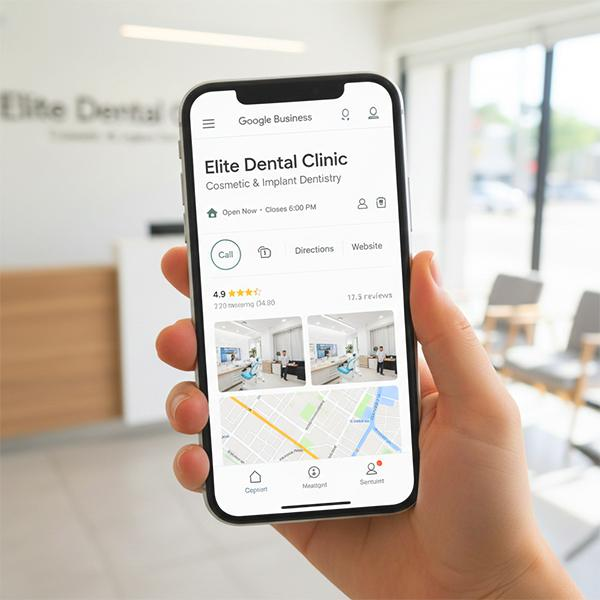

+75% de leads qualificados
Estrutura paga para clínica premium com aumento de marcações e queda contínua do custo por lead.
Transformamos investimento em marketing num fluxo estável de contactos qualificados para que possa crescer com previsibilidade todos os meses.
Se a agenda está cheia mas a faturação não escala com previsibilidade, o problema não é esforço. É falta de sistema.
Meses bons seguidos de semanas fracas, sem previsibilidade sobre o volume de contactos qualificados.
Campanhas avulsas, investimento disperso e decisões por intuição em vez de dados acionáveis.
Não sabe o que funciona, quanto custa cada cliente, nem onde está a perder margem.
A diferença entre executar ações isoladas e construir um motor de aquisição com controlo, previsibilidade e escala.
Projetos onde ligámos investimento a crescimento mensurável com impacto direto na faturação.
Estrutura paga para clínica premium com aumento de marcações e queda contínua do custo por lead.
Plano SEO orientado a intenção comercial que duplicou visibilidade e consolidou procura recorrente.
Reengenharia de landing pages e criativos para multiplicar pedidos de orçamento com o mesmo tráfego.
Milhares de empresas já conseguiram mais leads, autoridade e crescimento com a estratégia certa.
Ver Oferta"O trabalho da equipa foi muito rápido e transparente. As nossas conversões subiram logo no primeiro mês."
"Agora temos um funil previsível e um fluxo constante de pedidos. A gestão das campanhas ficou muito mais simples."
"As recomendações foram claras e o resultado foi imediato. Vimos mais pacientes entrar e mais faturação realizada."
"A presença digital passou a ser um canal de vendas real. Hoje temos clientes a marcar diretamente a partir dos anúncios."
"O SEO local trouxe pacientes de toda a cidade. Em 3 meses, tínhamos agenda cheia e pacientes recorrentes."
"As campanhas no Google Ads trouxeram exactamente o tipo de pacientes que eu queria. Qualidade sobre quantidade."
"Construíram autoridade online para mim. Agora sou referência na minha área e tenho pacientes de toda a região."
"O funil de vendas que criaram converteu visitantes em clientes fiéis. O ROI foi impressionante desde o primeiro mês."
"As redes sociais trouxeram alunos todos os dias. A estratégia de conteúdo funcionou perfeitamente para o nosso público."
"Posicionaram-me como especialista. Agora tenho consultas marcadas com semanas de antecedência através do site."
"O Google Ads trouxe clientes que realmente precisavam dos nossos serviços. O investimento voltou em menos de 30 dias."
"As campanhas locais no Facebook trouxeram clientes do bairro todo. A agenda encheu-se em semanas."
"A estratégia SEO posicionou-nos como líderes na área. Pacientes vêm de toda a região procurar os nossos serviços."
"Construíram uma presença online profissional que transmitia confiança. Os pacientes sentem-se seguros a contactar-nos."
"As campanhas pagas trouxeram exactamente o perfil de cliente que procurávamos. ROI excepcional desde o início."
"O Instagram tornou-se o nosso maior canal de captação. Clientes marcam tratamentos diariamente através das stories."
Um processo claro para transformar investimento em aquisição previsível e crescimento sustentado.
Auditamos canais, oferta e funil para identificar onde está a perder margem e oportunidades de escala.
Definimos um plano de aquisição com objetivos mensuráveis, prioridades claras e execução orientada a resultado.
Otimização contínua para aumentar faturação com previsibilidade, mantendo controlo de custo e qualidade de lead.
Os canais certos no momento certo, para transformar procura em contactos e contactos em faturação previsível.
Captamos procura qualificada com retorno mensurável por cada euro investido.
Visibilidade orgânica sustentável para crescer sem depender de publicidade paga.
Mais conversões com o mesmo tráfego, através de otimização contínua de páginas e funis.
Websites focados em conversão e geração de contactos qualificados.
Presença e conteúdo estratégico para construir autoridade e gerar procura recorrente.
Identidade visual que comunica valor e posiciona a sua marca antes de falar.
Conteúdos práticos para aumentar eficiência de aquisição, melhorar conversão e escalar com consistência.

Segmentação, criativos e estrutura de conta para reduzir custo de aquisição sem perder volume.

Passos objetivos para dominar pesquisas locais e gerar contactos com maior intenção de compra.
Elementos críticos de copy, prova e UX para aumentar conversão sem aumentar investimento.
Em campanhas de tráfego pago os resultados começam a aparecer em dias. Para SEO, esperamos ganhos significativos em 3 a 6 meses.
Sim. A estratégia e o plano de mídia podem ser entregues com texto e posicionamento. Imagens podem ser adicionadas depois sem impactar o lançamento.
O investimento inicial depende do setor, mas nossas campanhas começam a partir de um orçamento mensal enxuto, ajustado ao objetivo de crescimento.